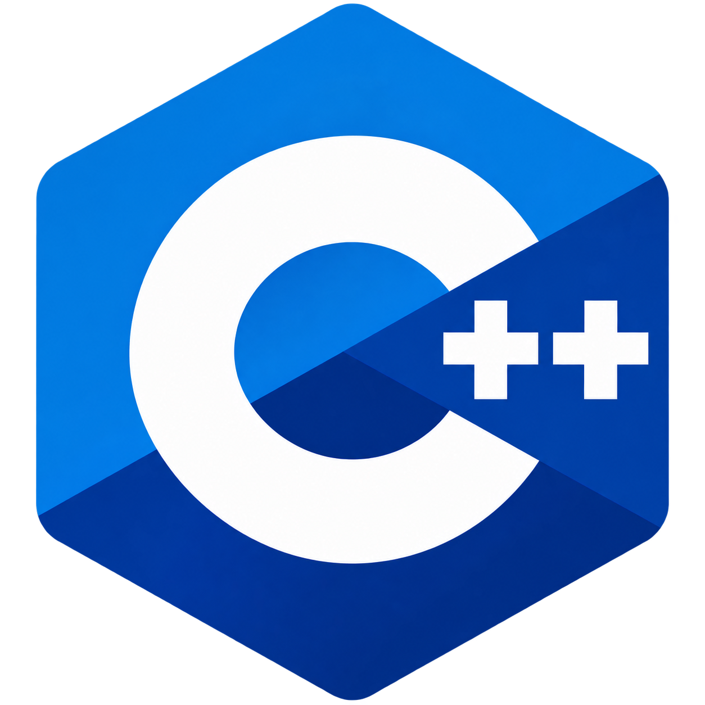
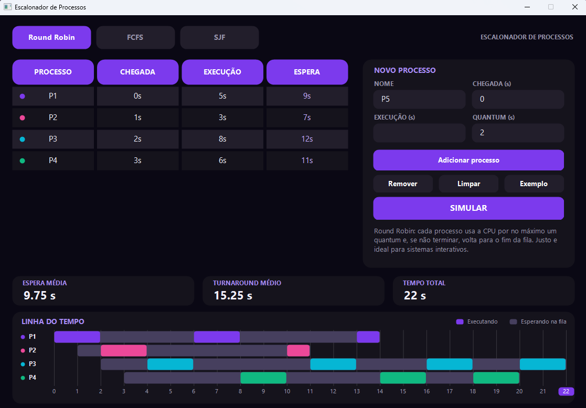
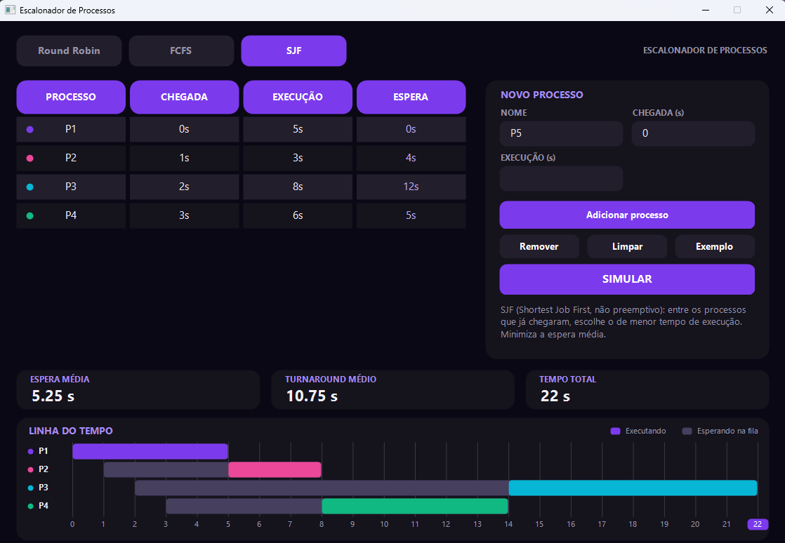

Guilherme
Desenvolvedor BackendDesenvolvimento da lógica do simulador, implementação dos algoritmos de escalonamento e integração com a interface gráfica.
Uma ferramenta desenvolvida para demonstrar de forma visual e interativa o funcionamento dos principais algoritmos de escalonamento de processos.
Processo P1;
Tempo = 10;
Escalonador .Executar();
✓ Processo executado
O Simulador de Escalonamento é uma aplicação desenvolvida em C# utilizando a plataforma .NET e a tecnologia WPF para criação da interface gráfica.
O objetivo do projeto é facilitar o estudo dos algoritmos utilizados pelos sistemas operacionais para determinar a ordem de execução dos processos.
Por meio do simulador, o usuário pode inserir processos e acompanhar visualmente como eles são organizados e executados.
Tornar o estudo de escalonamento de processos mais visual, didático e interativo.
O usuário informa os processos, tempos de execução e demais parâmetros.
O usuário escolhe o algoritmo de escalonamento que deseja utilizar.
O sistema executa o algoritmo e organiza os processos.
Os resultados são apresentados visualmente para análise.
Conheça os 3 integrantes por trás do simulador.
Desenvolvimento da lógica do simulador, implementação dos algoritmos de escalonamento e integração com a interface gráfica.
Desenvolvimento da interface gráfica, implementação das funcionalidades visuais, site de apresentação e experiência do usuário.
Responsável pela documentação do projeto, elaboração de relatórios, manuais e materiais de apoio para o uso do simulador.

Linguagem utilizada para desenvolver a lógica da aplicação.
Plataforma utilizada para desenvolvimento da aplicação.
Framework utilizado para criação da interface gráfica.
Linguagem utilizada para estruturar a interface do aplicativo.
Ambiente de desenvolvimento utilizado na criação do projeto.
Veja algumas imagens da aplicação em funcionamento.


Baixe o projeto completo, incluindo o código-fonte, solução do Visual Studio e documentação.